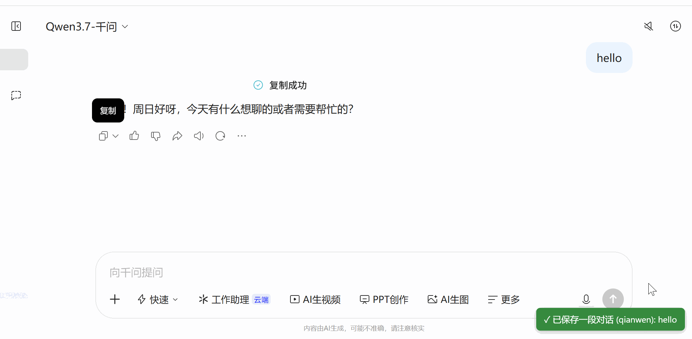

Chat Keeper
收藏有价值的 AI 对话，让知识持续积累。
Chat Keeper 是一款面向通义千问用户的 Chrome 扩展，帮助你保存、查找、整理和回顾自己的问答。
🔒 本地存储，注重隐私。
📖 清晰阅读，方便回顾。
⚙️ 简单易用，专注对话管理。
下载/试用
Chrome Store 已通过
Chrome/Edge/Chromium 开发者模式加载 extension 版本
📚 文档导航
✨ Chat Keeper 介绍
了解 Chat Keeper 的设计理念、主要功能、隐私保护、问答管理与备份迁移。
💾 为什么要把 AI 问答保存到本地？
了解本地保存的优势，以及如何让有价值的对话成为可以长期积累和重复利用的个人资料。
🌐 为什么选择通义千问？
了解通义千问的综合能力、专业应用场景，以及将其作为主力 AI 助手的理由。
示例

感谢访问 Chat Keeper 介绍
Chat Keeper — Keep valuable conversations.